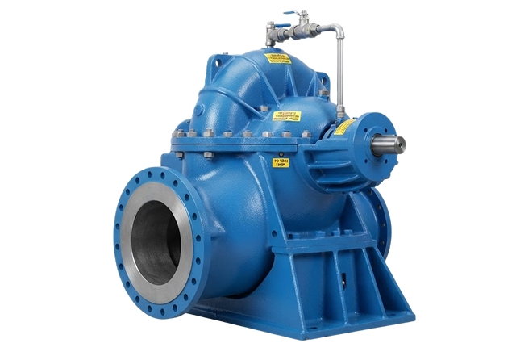
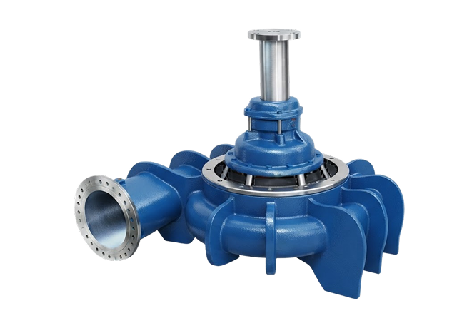
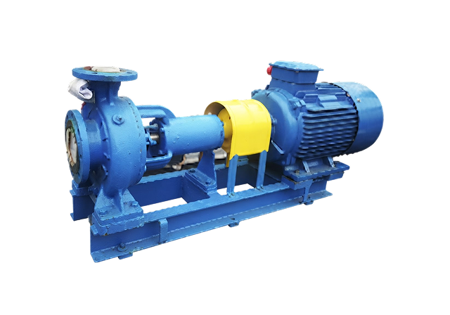
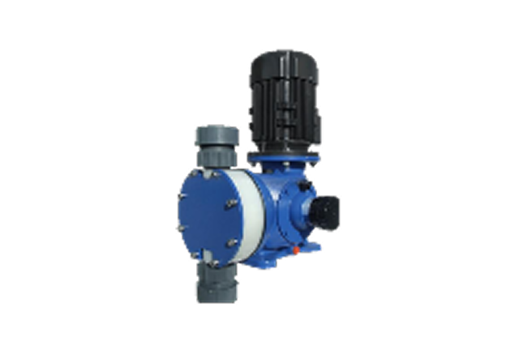
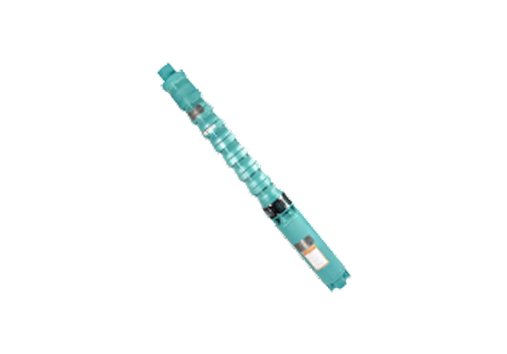
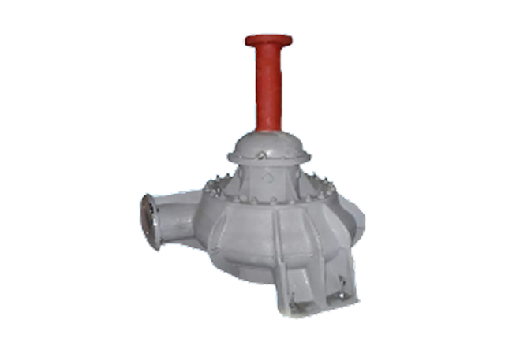
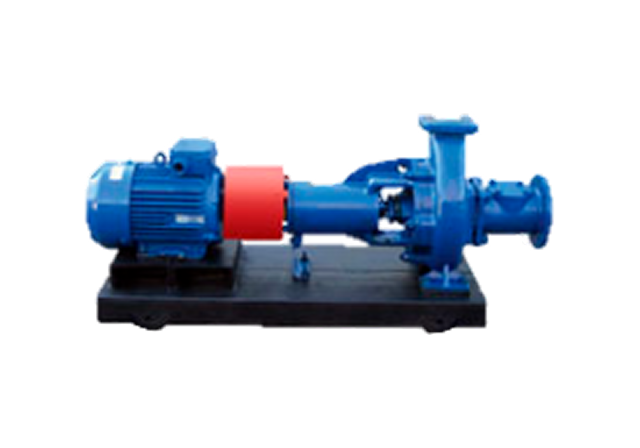
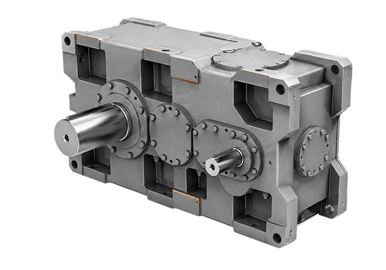
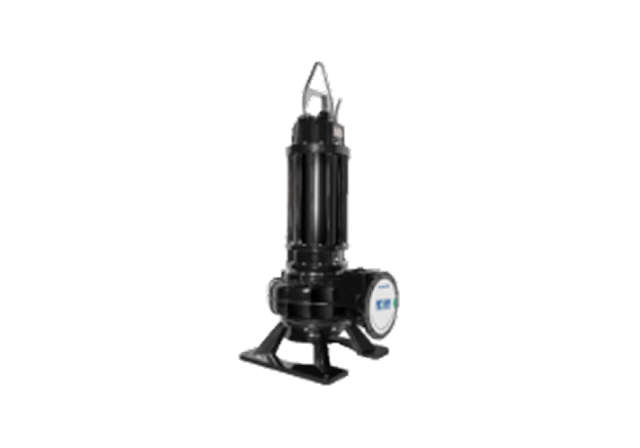
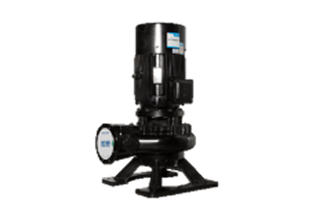

Водоснабжение и водоотведение — это отрасли, от которых зависит жизнедеятельность городов, работа промышленных предприятий и экологическая безопасность регионов. Это тысячи километров сетей, сотни насосных станций и очистных сооружений, работающих в круглосуточном режиме. Каждый сбой в этой системе оборачивается перебоями с водой для жителей, остановкой производств и экологическими рисками. Оборудование здесь эксплуатируется в тяжёлых условиях: перепады давления, агрессивные среды, абразивные частицы, сезонные колебания нагрузок. В таких условиях заказчику нужен не просто поставщик насосов, а инжиниринговый партнёр, который понимает технологические процессы изнутри и готов отвечать за стабильность всей системы.
Применяем комплексный подход к обслуживанию:
Бесперебойная подача воды потребителям
Водоснабжение — это система жизнеобеспечения. Остановка насосной станции означает срыв подачи воды жилым кварталам, больницам и промышленным объектам. Мы проектируем схемы с резервированием, подбираем оборудование с запасом по производительности и контролируем монтаж на каждом этапе. В результате — стабильное давление и гарантированная подача воды в любых режимах.
Энергоэффективность насосных станций
Насосное оборудование — основной потребитель электроэнергии на объектах водоснабжения. До 30% затрат приходится на приводы насосов. Мы снижаем этот показатель: оптимизируем режимы работы, подбираем насосы с высоким КПД, внедряем частотное регулирование. Экономия достигает 15–25% без потери надёжности.
Надёжное водоотведение и очистка сточных вод
Системы водоотведения работают в агрессивных средах — с абразивными частицами, химически активными веществами и неравномерными потоками. Оборудование быстро изнашивается. Мы подбираем насосы с износостойкими материалами, усиленными уплотнениями и автоматикой, адаптирующейся к изменению уровня и расхода. Обеспечиваем бесперебойную перекачку стоков в любых условиях.
Импортозамещение и модернизация насосного парка
Замена устаревшего или импортного оборудования — одна из самых частых задач в отрасли. Мы предлагаем проверенные российские и китайские аналоги, не уступающие по качеству европейским брендам. Проводим детальный анализ характеристик, материалов и присоединительных размеров. Подбираем решение, которое встаёт на место без доработок. Импортозамещение без простоев и потери надёжности.
Насосы для подачи чистой воды
| Тип оборудования | Производительность | Напор | Мощность |
|---|---|---|---|
| Насосы типа Д | до 12 500 м³/ч | до 125 м | до 1 250 кВт |
| Насосы типа В | до 12 500 м³/ч | до 125 м | до 1 250 кВт |
| Насосы типа К, КМ | до 12 500 м³/ч | до 125 м | до 1 250 кВт |
| Скважинные насосы | до 12 500 м³/ч | до 125 м | до 1 250 кВт |
Насосы для водоотведения и канализации:
Перекачка сточных, ливневых и дренажных вод
В т. ч. вод с абразивными и механическими включениями
Износостойкие материалы и усиленные уплотнения
Автоматическое управление по уровню и расходу

Насосные агрегаты типа Д
Подробнее

Насосные агрегаты типа Д
Подробнее

Насосные агрегаты типа Д
Подробнее

Насосные агрегаты типа Д
Подробнее

Насосные агрегаты типа Д
Подробнее

Насосные агрегаты типа Д
Подробнее

Насосные агрегаты типа Д
Подробнее

Насосные агрегаты типа Д
Подробнее

Насосные агрегаты типа Д
Подробнее

Насосные агрегаты типа Д
Подробнее